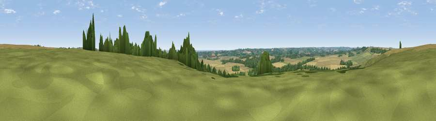

Viewpoint near Ulceby
#23927 in England · top 38% of its area beats it · near Ulceby · access?Where it is
The exact computed spot (TF 39575 71175). Click the marker for map links.
Public access: no public right of way or access land is recorded at this exact spot — it may be on private land. Computed from Natural England's CRoW access layer and OpenStreetMap rights of way — not the legal definitive map. Always verify locally.
The view, rendered

A 360° render of this exact spot computed from the terrain model, tree cover and land cover — summer colours, afternoon light, calibrated against photographs of famous viewpoints. Real trees, hedges and buildings will differ in detail.
The panorama
Grey silhouette: terrain skyline in each direction (720 bearings, Earth curvature and refraction included). Dashed green: skyline with trees (+15 m) and buildings (+8 m) as obstacles. Blue strip: how far the ground is visible on each bearing.
Where the view opens
Wedge length = distance to the farthest visible ground on that bearing (vegetation-aware). Rings at 10, 25 and 50 km.
What fills the view
56% grassland · 25% cropland · 18% woodland
Angular shares of the visible panorama (visual magnitude), not map area. Landscape diversity 0.44 (0–1 Shannon).
Key numbers
More beautiful places nearby
The staircase of upgrades: each row has a higher view potential than everything closer. Driving times are estimates from straight-line distance, calibrated against real road routing — check an actual route before setting out.
| Place | Direction | Drive | Score |
|---|---|---|---|
| Viewpoint near Brinkhill | NW · 2 km | ~6 min | 54.4 |
| Warden Hill | WNW · 6 km | ~12 min | 59.5 |
| Viewpoint near East Keal | SSW · 7 km | ~15 min | 66.0 |
| Viewpoint near Claxby | NW · 37 km | ~56 min | 71.5 |
| Garrowby Hill (A166 crest) | NNW · 104 km | ~128 min | 71.9 |
| Broombriggs Hill | WSW · 105 km | ~129 min | 74.4 |
| Viewpoint near Woodhouse Eaves | WSW · 105 km | ~129 min | 77.7 |
| Viewpoint near Speeton | NNW · 107 km | ~131 min | 80.0 |
53.21930, 0.08900 · source: screening · position refined by local search. Computed location — check access rights before visiting.